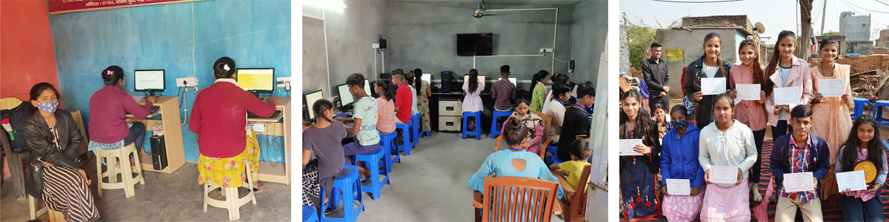
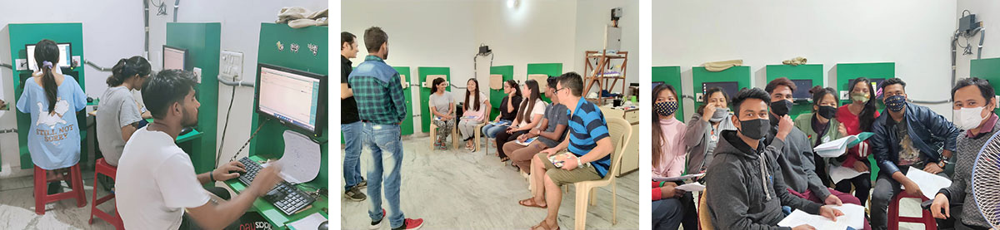
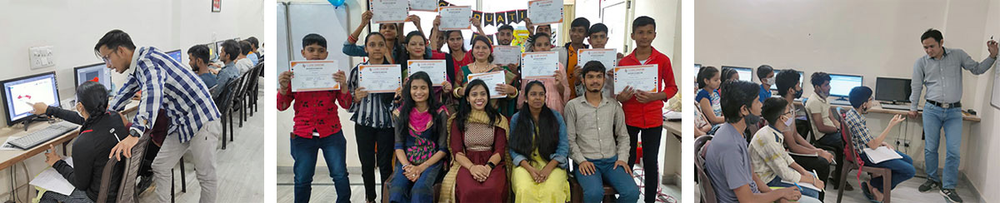
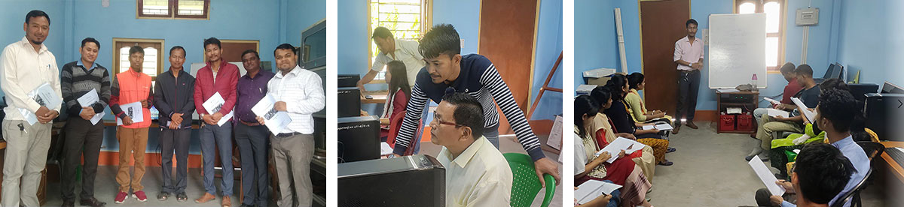

To increase employability among the underprivileged through high quality computer education.
We teach courses like Basic Computer Course (BCC), Advanced Excel and Tally ERP9 and Prime (AET), Graphic Design Course (GDC) and Web Designing (WDC). Computer education has become an integral part of the twenty-first century especially for better job opportunities and Inspire aims at making this accessible for the underprivileged through its own computer centers as well as partner organizations.

The people of Bhati Mines have been hereditary diggers and earth masons by trade and have struggled to create a better life for themselves due to marginalization.
Inspire started its computer center in Bhati Mines with 3 old donated computers which then increased to 5 and one server. We saw an initial enrollment of 15 students and eventually our first batch of 10 graduates from the Basic Computer Course in December 2021. As we got more and more enquiries about our course we realized we needed more computers and more space. In May 2022 with the help of our generous donors we were able to expand our work by acquiring a bigger space and an additional 10 computers.
Inspire believes in not just teaching the underprivileged but empowering these communities to run their own programs eventually and look for employment opportunities within the same field, In light of this we ensure that our teachers select and train interns in every batch. These interns are trained in the course material, teaching methodologies as well as centre management issues. Our first batch of interns graduated in August 2022 and we are currently in the process of selecting a fresh batch.

Inspire partners strategically with ASHA BHAWAN an NGO for drug rehab and a home for the homeless in over 19 cities. The home is a safe space for people seeking healing and restoration from a past of hopelessness and abuse. Since August 2020, Inspire has partnered with Asha Bhawan in providing computer education to their staff most of whom were former residents of the home or their children. The goal of the project is to train Asha Bhawan staff to use software like Tally for accounts and Graphic Design to design their newsletters, reports etc and make the Asha Bhawan centers self-sufficient in these areas.
Inspire started Asha Bhawan computer centre on 31 august 2020, with 12 students graduating in the first batch of BCC. A graduation ceremony was held for the students on 17 March 2021.
In July 2021 second batch of BCC was started in which 4 students graduated in addition to 7 from Tally course and 5 from Graphic design course.

Inspire collaborated with Life center, a center for educating the underprivileged, in Sangam Vihar, Delhi, populated by migrant laborers from nearby states. We undertook the selection, and set up of equipment, selection and training of teachers, provision and development of curriculum, monitoring of classes with feedback sessions and training in center management.
In addition, students and their parents are being made aware of employment opportunities available through career counselling sessions.
After 1½ years of investment and partnership, this center is now running independently and is not just a center of learning but an income generation project for Life Centre.
Inspire started the computer classes at Life centre on 1 February 2021 enrolling students in BCC, GDC and TAE. We have held 4 graduation ceremonies with a total of 142 graduates thus far. The most recent graduation being in April 2022.

Inspire’s vision to impact rural and marginalized communities led to setting up a Computer Literacy center in Alipurduar, West Bengal for our partners LFF. The center aims at training and upskilling the families of tea garden workers and other neighboring people from underprivileged families, most of who are from schedule caste and tribal backgrounds.
The center was set up by Inspire staff and training was imparted to local resource people equipping them for center management, crisis management, system troubleshooting and teaching methodologies.
Inspire set up the computer centre at LFF in February 2022 and the first batch was just the internal staff and teachers being upskilled. In April 2022 they took in their first set of students from the community. The center has seen 28 students completing the course thus far. The graduation ceremony will be held in November 2022.
Inspire
B 7/43 Basement, Safdarjung Enclave
New Delhi - 110029